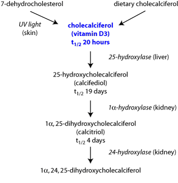

Cholecalciferol (vitamin D3)
Rodenticides containing cholecalciferol are used overseas.
Sources
In NZ cholecalciferol is available for possum control. It is also highly toxic to cats and dogs.
Structure and Formulation
Toxicity
Toxicity has been reported at levels as low as 3mg/kg while serious toxicity is likely above 10mg/kg. Cats are more sensitive to cholecalciferol than dogs and young animals are the most sensitive.
Pathophysiology
After ingestion, vitamin D3 is absorbed completely and rapidly from the jejunum. It appears first in the lymph before the blood. The highest concentrations of vitamin D3 are found in plasma, liver, kidneys and adipose tissue. Calcifediol is a storage form of the vitamin. Vitamin D3 crosses the placenta and will cause supravalvular aortic stenosis in rabbits born to does treated with vitamin D3. It is metabolised by the liver and kidney and excreted mainly in the faeces. A small amount is excreted in the urine (about 2%).

Figure 6 Metabolism of Vitamin D3 or cholecalciferol
Vitamin D
3 or cholecalciferol is a positive regulator responsible for calcium homeostasis in the body. Excessive amounts of vitamin D
3 cause hypercalcaemia which lead to a number of body changes. These include:
- Increased absorption of calcium and phosphorus from the intestinal tract.
- Mobilisation of calcium from bone.
- Decreased renal excretion.
- Bradycardia with conduction dysfunction, the Q-T interval is shortened and the P-R interval is prolonged when blood calcium is greater than 3.49 mmol/L or 14mg/dL depending on the value used by the diagnostic laboratory.
- Calcium deposits appear throughout the body tissues in the heart, blood vessels, kidneys and lungs.
- Vasoconstriction occurs with increased vascular resistance and increased output of renin leading to:
- Severe renal ischemia and tubular necrosis, a decrease in ADH levels, polyuria or oliguria.
- Electrolyte disturbances (Na+ and K+ loss).
- Finally renal failure and heart failure. The renal calcium deposits appear particularly in the loop of Henle and the collecting ducts.
Clinical signs
The main signs of cholecalciferol toxicity often develop within 12 - 36 hours after the consumption of a toxic dose and include:
- Hypercalcaemia and hyperphosphataemia appear at 12 - 24 hours.
- Lethargy, weakness, anorexia, vomiting and constipation.
- Severe gastrointestinal signs such as haematemesis and bloody faeces.
- Dehydration.
- Polyuria or oliguria and polydipsia.
- Cardiac abnormalities ECG shows the P-R interval lengthened and the Q-T interval shortened.
- Hypertension.
- Neurological signs include: twitching, seizures, depression and stupor.
Post mortem signs
Gross lesions include petechial haemorrhages in tissues, pale streaks in kidney tissue and raised plaques in the intima of large blood vessels.
Microscopic lesions may include mineralisation of the kidney tubules, coronary arteries, gastric mucosa, parietal pleura, pulmonary bronchioles, pancreas and urinary bladder. The renal tubules may be necrotic or degenerative.
Diagnosis
The following tests are of value to confirm a diagnosis of vitamin D3 toxicity.
- A serum calcium level higher than 4.99 mmol/L is characteristic and highly suggestive of vitamin D3 toxicosis.
- An elevated serum phosphorus level may precede the hypercalcaemia by as much as 12 hours and could serve as an early nonspecific indicator.
- Urine specific gravity is 1.002 - 1.006.
- Increased BUN and creatinine levels occur as the toxicosis develops.
- Excessive active 1,25-dihydroxyvitamin D metabolites are present in renal tissue, but the analysis is difficult and few laboratories would perform it.
Differential diagnosis
Treatment
Detoxification therapy is essential when the exposure is recent (3 - 4 hours). The first treatment with activated charcoal should include or be followed by a laxative.
Activated charcoal is essential and should be repeated for several days due to the enterohepatic circulation of cholecalciferol and its metabolites. Treat the hypercalcaemia with fluid therapy of normal saline and frusemide for diuresis.
- Saline diuresis promotes calcium excretion.
- Frusemide for diuresis (5 mg/kg IV initially then 3 mg/kg q8h)
- Corticosteroid administration of prednisone (2mg/kg q8
12h) inhibits the release of osteoclast
activating factors, reduces intestinal calcium absorption and promotes hypercalciuria.
- Pamidronate disodium (Aredia®) has been shown to be effective in lowering calcium levels. The dose is 1.3 - 2.0 mg/kg in saline given over two hours intravenously. Saline fluids are continued until calcium levels return to normal. Continue to monitor calcium levels daily for 4 days. If calcium levels become elevated a second treatment of pamidronate may be required. Alternatively, Salmon calcitonin (4 - 6 IU/kg subcutaneously q3h increase to 10 - 20 IU/kg if the animal does not respond) may be administered to reduce excessive serum calcium levels. The treatment is not as effective as pamidronate and reactions to calcitonin may occur. It is not recommended to use both drugs concurrently.
- Avoid sunlight.
Prognosis
The prognosis is generally guarded to poor depending on the severity and responsiveness of the hypercalcaemia.
References
Carothers, M and Chew, D.J. (1991). Management of Cholecalciferol Rodenticide Toxicity. The Compendium, Small Animal. 13 (7): 1058
1062.
Eason, C. Meikle, L. Henderson, R (1996). Testing cats for secondary poisoning by cholecalciferol. Vetscript lX No.3
26.
Lofti, El Bahri (1990). Poisoning in Dogs by Vitamin D3 Containing Rodenticides. The Compendium, Small Animal. 12 (10): 1414
1417.
Rumbeiha WK, Fitzgerald SD, Kruger JM, Braselton WE, Nachreiner R, Kaneene JB and Frese KK.( 2000) Use of pamidronate disodium to reduce cholecalciferol
induced toxicoses in dogs. AmJ Vet Res. 61(1).